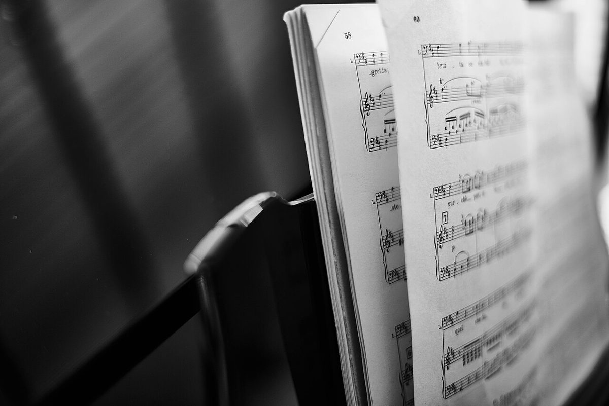
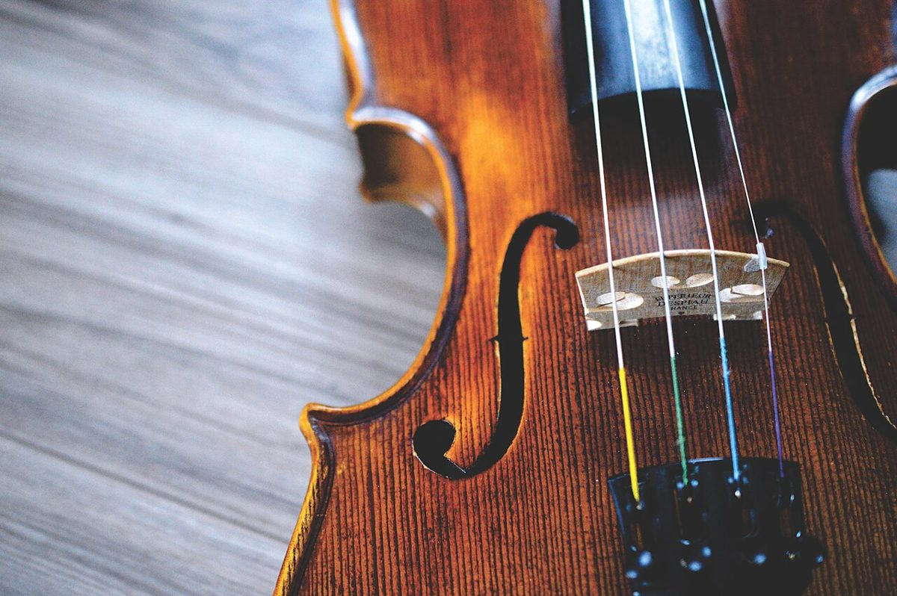
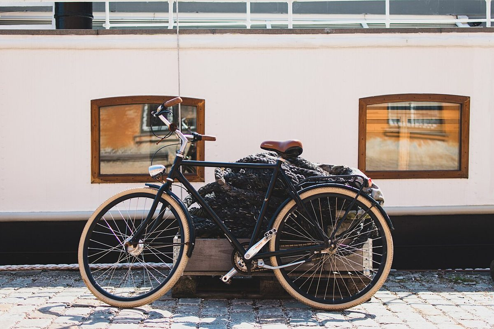

喫茶店 / 京都府与謝郡与謝野町
喫茶 花音喫茶 花音喫茶 花音
京都府与謝郡与謝野町にある喫茶店「喫茶 花音(かのん)」のご案内ページです。営業時間やメニューなど詳しいことは準備中。お電話は 0772-44-0022、Instagramもどうぞ。
制作側の連想
「かのん」から「輪唱」を思いついた
店名の由来は分かりません。制作側は「かのん」という音から、英語の canon(カノン)=同じ旋律を少しずつ遅らせて追いかける輪唱の形式を連想しました。そこでこのサイトは、最初の声部のあとに二番目、三番目と、少しずつ遅れて入ってくる作りにしています。制作側の連想で、お店の理念・由来とは無関係です。
追いかける三つの声(イメージ)
ひとつめ、ふたつめ、みっつめ。
写真は与謝野町やお店のものではなく、国外・撮影地不明のフリー素材です。
1国外のイメージ(ドイツ)

2国外のイメージ(カナダ)

3国外のイメージ(米国)

ご案内
お店のこと(確認できたものだけ)
| 所在地 | 〒629-2403 京都府与謝郡与謝野町加悦802 |
|---|---|
| 電話 | 0772-44-0022 |
| 営業時間 | 準備中 |
| 定休日 | 準備中 |
| ご予約 | 準備中 |
| 駐車場 | 準備中 |
| SNS | Instagram @kanon_kissa |